chaff <- read_table("data-raw/chaff.txt")13 Two-Sample tests
Just needs proof reading
You are reading a work in progress. This page is compete but needs final proof reading.
13.1 Overview
In the last chapter, we explored single linear regression, a technique used when the explanatory variable is continuous. Now, we shift our focus to cases where the explanatory variable is categorical with two groups. For example, we may want to determine if there is a difference in mass between two subspecies of chaffinch or compare marks in two subjects.
To conduct a two-sample test, we use either lm() or wilcox.test(), depending on whether the assumptions of lm() are met. General linear models applied with lm() are parametric tests, meaning they rely on the normal distribution’s parameters (mean and standard deviation) to determine statistical significance. The null hypothesis typically concerns the mean or the difference between means. For the p-values to be valid, the assumptions must be satisfied.
If these assumptions are not met, we turn to non-parametric tests, which rely on the ranks of values rather than the actual values themselves. Here, the null hypothesis concerns the mean rank instead of the mean. While non-parametric tests are more flexible and applicable in a wider range of scenarios, they tend to be less powerful, meaning they are less likely to detect a true difference when one exists.
13.1.1 Independent vs. Paired Samples
A crucial consideration when conducting tests is whether the values in one group are independent of those in the other. Non-independence occurs when the two measures are linked in some way—for instance, if they come from the same individual, time, or location.
For example, when evaluating a treatment for high blood pressure, we might measure blood pressure before and after treatment on the same individuals. In this case, the before and after measurements are not independent. If pairs of observations across groups share a common factor that makes them more similar to each other than to other observations, the samples are not independent.
We use different testing approaches for independent and non-independent samples to account for this dependency.
13.1.2 T-tests
A linear model with one explanatory variable with two groups is also known as a two-sample t-test when the samples are independent and as a paired-samples t-test when they are not. R does have a t.test() function which allows you to fit a linear model with just two groups. However, here we teach you to use and interpret the lm() function because it is more generalisable. You can use lm() when you have three or more groups or additional explanatory variables. The output of lm() is also in the same form as many other statistical functions in R. This means what you learn in performing t-tests with lm() will help you learn other methods more easily. However, it is definitely not wrong to use t.test() rather than lm() for two-group situations - the procedures are identical and the p-values will be the same.
13.1.3 Model assumptions
The assumptions of the general linear model are that the residuals are normally distributed and have homogeneity of variance. A residual is the difference between the predicted value and the observed value.
If we have a continuous response and a categorical explanatory variable with two groups, we usually apply the general linear model with lm() and then check the assumptions, however, we can sometimes tell when a non-parametric test would be more appropriate before that:
Use common sense - the response should be continuous (or nearly continuous, see Ideas about data: Theory and practice). Consider whether you would expect the response to be continuous.
We expect decimal places and few repeated values.
To examine the assumptions after fitting the linear model, we plot the residuals and test them against the normal distribution in the same way as we did for single linear regression.
13.1.4 Reporting
In reporting the result of two-sample test we give:
-
the significance of effect - whether there is there a difference between the groups
- parametric: whether there is there a difference between the groups means
- non-parametric: whether there is there a difference between the group medians
the direction of effect - which of the means/medians is greater
-
the magnitude of effect - how big is the difference between the means/medians
- parametric: the means and standard errors for each group or the mean difference for paired samples
- non-parametric: the medians for each group or the median difference for paired samples
Figures should reflect what you have said in the statements. Ideally they should show both the raw data and the statistical model:
- parametric: means and standard errors
- non-parametric: boxplots with medians and interquartile range
We will explore all of these ideas with some examples.
13.2 🎬 Your turn!
If you want to code along you will need to start a new RStudio project, add a data-raw folder and open a new script. You will also need to load the tidyverse package (Wickham et al. 2019).
13.3 Two independent samples, parametric
A number of subspecies of the common chaffinch, Fringilla coelebs, have been described based principally on the differences in the pattern and colour of the adult male plumage (Suárez et al. 2009). Two of groups of these subspecies are:
- the “coelebs group” (Figure 13.1 (a)) that occurs in Europe and Asia
- the “canariensis group” (Figure 13.1 (b)) that occurs on the Canary Islands.
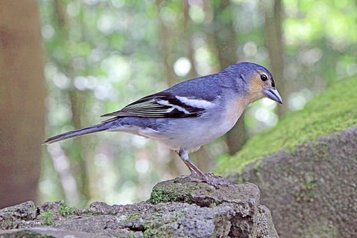
The data in chaff.txt give the masses of twenty individuals from each subspecies. We want to know if the subspecies differ in mass. These groups are independent - there is no link between values in one group and any value in the other group. In this scenario our null hypothesis, \(H_0\), is that there is no difference between the two subspecies in mass or that subspecies has no effect on mass. This is written as: \(H_0: \beta_1 = 0\).
13.3.1 Import and explore
Import the data:
| subspecies | mass |
|---|---|
| coelebs | 18.3 |
| coelebs | 22.1 |
| coelebs | 22.4 |
| coelebs | 18.5 |
| coelebs | 22.2 |
| coelebs | 19.3 |
| coelebs | 17.8 |
| coelebs | 20.2 |
| coelebs | 22.1 |
| coelebs | 16.6 |
| coelebs | 20.7 |
| coelebs | 18.7 |
| coelebs | 22.6 |
| coelebs | 21.5 |
| coelebs | 21.7 |
| coelebs | 19.9 |
| coelebs | 23.1 |
| coelebs | 17.8 |
| coelebs | 19.5 |
| coelebs | 24.6 |
| canariensis | 22.7 |
| canariensis | 20.6 |
| canariensis | 25.4 |
| canariensis | 20.4 |
| canariensis | 21.6 |
| canariensis | 17.0 |
| canariensis | 26.4 |
| canariensis | 20.4 |
| canariensis | 24.7 |
| canariensis | 21.8 |
| canariensis | 23.4 |
| canariensis | 24.4 |
| canariensis | 21.0 |
| canariensis | 23.4 |
| canariensis | 20.5 |
| canariensis | 21.4 |
| canariensis | 21.5 |
| canariensis | 23.7 |
| canariensis | 23.4 |
| canariensis | 21.8 |
These data are in tidy format (Wickham 2014) - all the mass values are in one column with another column indicating the subspecies. This means they are well formatted for analysis and plotting.
In the first instance, it is always sensible to create a rough plot of our data. This is to give us an overview and help identify if there are any issues like missing or extreme values. It also gives us idea what we are expecting from the analysis which will make it easier for us to identify if we make some mistake in applying that analysis.
Violin plots (geom_violin()), box plots (geom_boxplot(), see Figure 13.2) or scatter plots (geom_point()) all make good choices for exploratory plotting and it does not matter which of these you choose.
ggplot(data = chaff,
aes(x = subspecies, y = mass)) +
geom_boxplot()
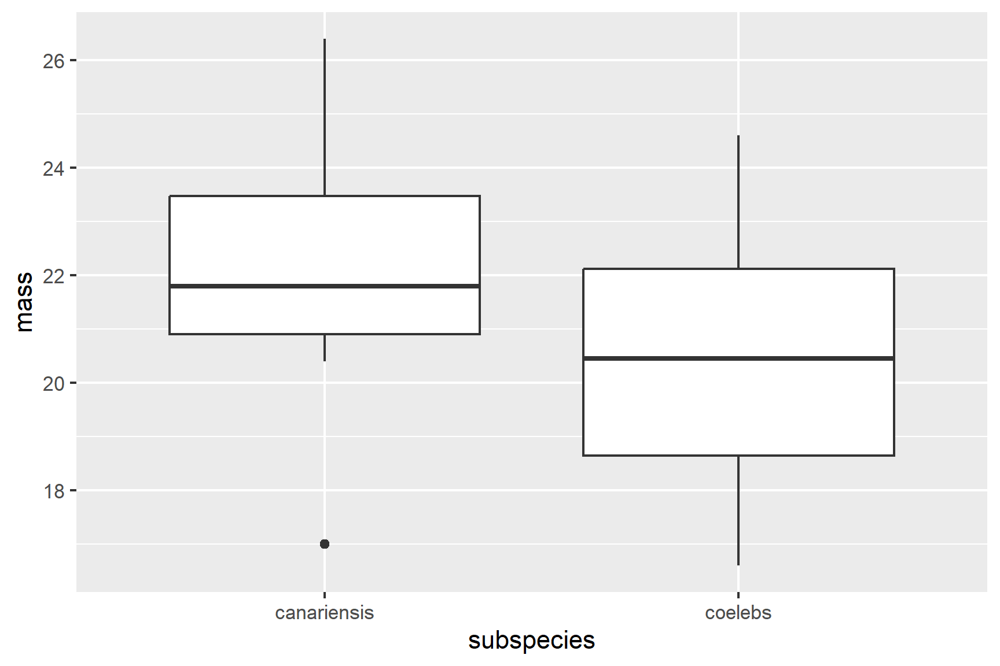
R will order the groups alphabetically by default.
The figure suggests that the canariensis group is heavier than the coelebs group.
Summarising the data for each subspecies group is the next sensible step. The most useful summary statistics are the means, standard deviations, sample sizes and standard errors. I recommend the group_by() and summarise() approach:
We have save the results to chaff_summary so that we can use the means and standard errors in our plot later.
chaff_summary
## # A tibble: 2 × 5
## subspecies mean std n se
## <chr> <dbl> <dbl> <int> <dbl>
## 1 canariensis 22.3 2.15 20 0.481
## 2 coelebs 20.5 2.14 20 0.478
13.3.2 Apply lm()
We can create a two-sample model like this:
mod <- lm(data = chaff, mass ~ subspecies)And examine the model with:
summary(mod)
##
## Call:
## lm(formula = mass ~ subspecies, data = chaff)
##
## Residuals:
## Min 1Q Median 3Q Max
## -5.2750 -1.7000 -0.3775 1.6200 4.1250
##
## Coefficients:
## Estimate Std. Error t value Pr(>|t|)
## (Intercept) 22.2750 0.4795 46.456 <2e-16 ***
## subspeciescoelebs -1.7950 0.6781 -2.647 0.0118 *
## ---
## Signif. codes: 0 '***' 0.001 '**' 0.01 '*' 0.05 '.' 0.1 ' ' 1
##
## Residual standard error: 2.144 on 38 degrees of freedom
## Multiple R-squared: 0.1557, Adjusted R-squared: 0.1335
## F-statistic: 7.007 on 1 and 38 DF, p-value: 0.01175The Estimates in the Coefficients table give:
(Intercept)known as \(\beta_0\). The mean of the canariensis group (Figure 13.3). Just as the intercept is the value of the y (the response) when the value of x (the explanatory) is zero in a simple linear regression, this is the value ofmasswhen thesubspeciesis at its first level. The order of the levels is alphabetical by default.subspeciescoelebs, known as \(\beta_1\), is what needs to be added to the mean of the canariensis group to get the mean of the coelebs group (Figure 13.3). Just as the slope is amount of y that needs to be added for each unit of x in a simple linear regression, this is the amount ofmassthat needs to be added when thesubspeciesgoes from its first level to its second level (i.e., one unit). Thesubspeciescoelebsestimate is negative so the the coelebs group mean is lower than the canariensis group mean
The p-values on each line are tests of whether that coefficient is different from zero. Thus it is:
subspeciescoelebs -1.7950 0.6781 -2.647 0.0118 *
that tells us the difference between the means is significant.
The F value and p-value in the last line are a test of whether the model as a whole explains a significant amount of variation in the response variable. For a two-sample test, just like a regression, this is exactly equivalent to the test of the slope against zero and the two p-values will be the same.
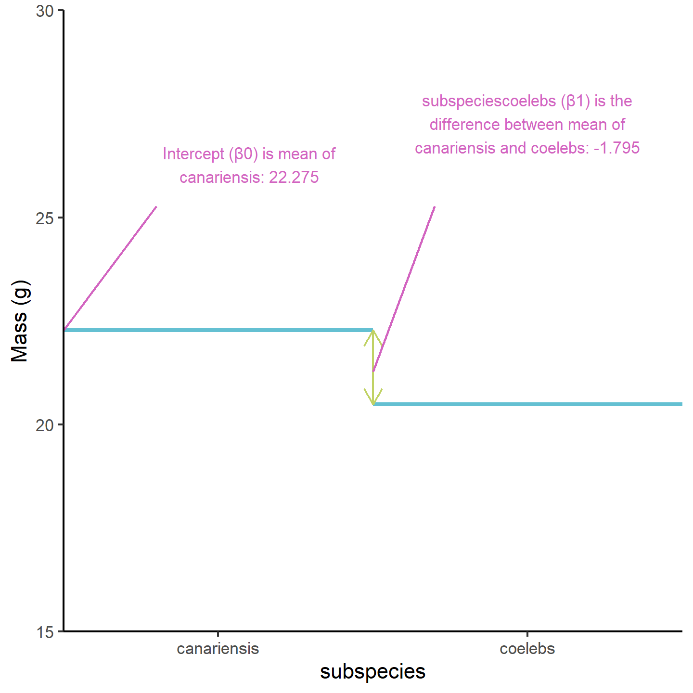
13.3.3 Check assumptions
Check the assumptions: All general linear models assume the “residuals” are normally distributed and have “homogeneity” of variance.
Our first check of these assumptions is to use common sense: mass is a continuous variable and we would expect it to be normally distributed thus we would also expect the residuals to be normally distributed.
We then plot the residuals. The plot() function can be used to plot the residuals against the fitted values (See Figure 13.4). This is a good way to check for homogeneity of variance.
plot(mod, which = 1)
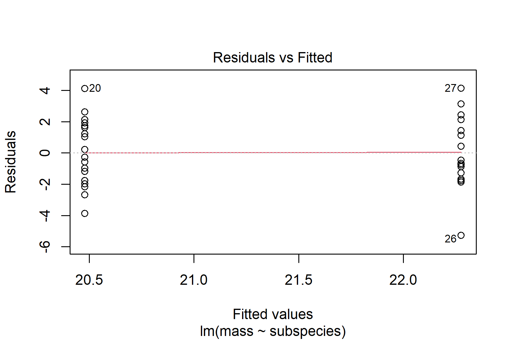
We can also use a histogram to check for normality (See Figure 13.5).
ggplot(mapping = aes(x = mod$residuals)) +
geom_histogram(bins = 10)
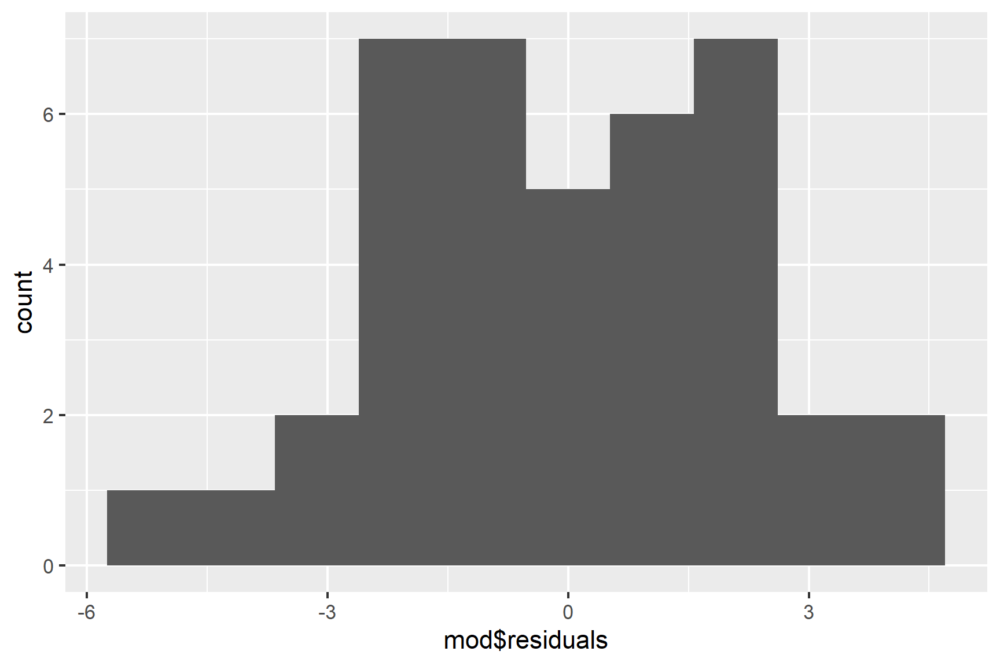
Finally, we can use the Shapiro-Wilk test to test for normality.
shapiro.test(mod$residuals)
##
## Shapiro-Wilk normality test
##
## data: mod$residuals
## W = 0.98046, p-value = 0.7067The p-value is greater than 0.05 so this test of the normality assumption is not significant.
Taken together, these results suggest that the assumptions of normality and homogeneity of variance are not violated.
13.3.4 Report
Canariensis chaffinches (\(\bar{x} \pm s.e\): 22.48 \(\pm\) 0.48) were significantly heavier than Coelebs (20.28 \(\pm\) 0.48 ) (t = 2.65; d.f. = 38; p = 0.012). See Figure 13.6.
Code
ggplot() +
geom_point(data = chaff, aes(x = subspecies, y = mass),
position = position_jitter(width = 0.1, height = 0),
colour = "gray50") +
geom_errorbar(data = chaff_summary,
aes(x = subspecies, ymin = mean - se, ymax = mean + se),
width = 0.3) +
geom_errorbar(data = chaff_summary,
aes(x = subspecies, ymin = mean, ymax = mean),
width = 0.2) +
scale_y_continuous(name = "Mass (g)",
limits = c(0, 30),
expand = c(0, 0)) +
scale_x_discrete(name = "Subspecies",
labels = c("Canariensis", "Coelebs")) +
annotate("segment", x = 1, xend = 2,
y = 28, yend = 28,
colour = "black") +
annotate("text", x = 1.5, y = 29,
label = expression(italic(p)~"= 0.012")) +
theme_classic()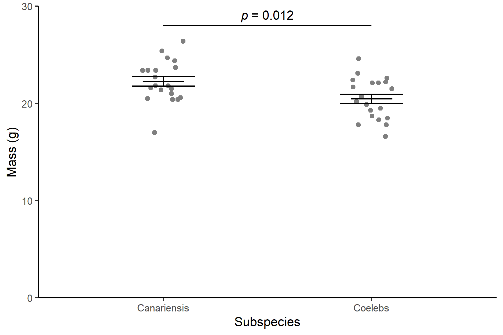
13.4 Two independent samples, non-parametric
The non-parametric equivalent of the linear model with two independent samples is the “Wilcoxon rank sum test” (Wilcoxon 1945). It is commonly also known as the Mann-Whitney or Wilcoxon–Mann–Whitney.
The general question you have about your data - are these two groups different - is the same, but one of more of the following is true:
- the response variable is not continuous
- the residuals are not normally distributed
- the sample size is too small to tell if they are normally distributed.
- the variance is not homogeneous
The test is a applied in R with the wilcox.test() function.
The data in arabidopsis.txt give the number of leaves on eight wildtype and eight mutant Arabidopsis thaliana plants. We want to know if the two types of plants have differing numbers of leaves. These are counts, so they are not continuous and the sample sizes are quite small. A non-parametric test is a safer option. In this scenario our null hypothesis, \(H_0\), is that there is no difference between the two types of plant in the number of leaves.
13.4.1 Import and explore
arabidopsis <- read_table("data-raw/arabidopsis.txt")These data are in tidy format (Wickham 2014) - the numbers of leaves are in one column with another column indicating whether the observation comes from a wildtype or mutant Arabidopsis. This means they are well formatted for analysis and plotting.
Create a quick plot of the data:
ggplot(data = arabidopsis,
aes(x = type, y = leaves)) +
geom_boxplot()
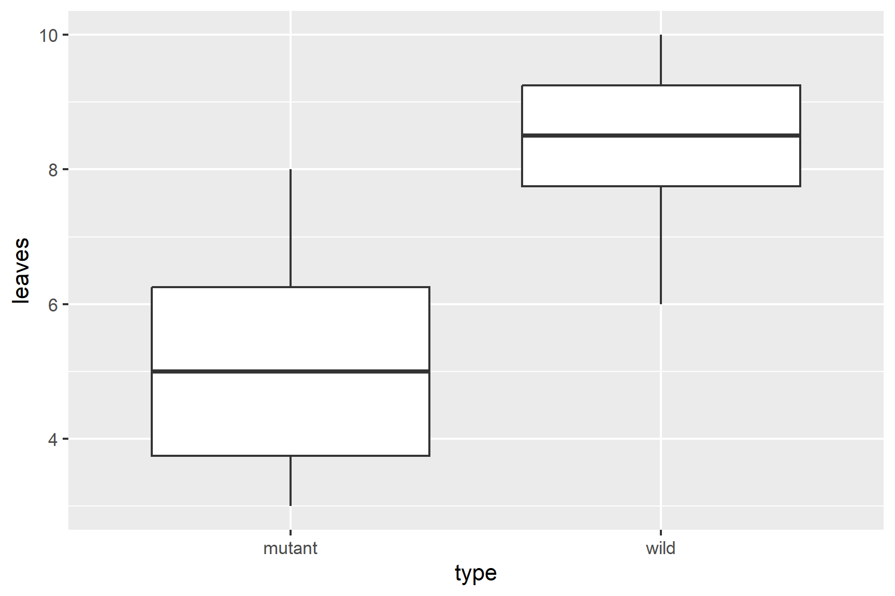
Our rough plot shows that the mutant plants have fewer leaves than the wildtype plants.
Summarising the data using the median and interquartile range is more aligned to the type of data and the type of analysis than using means and standard deviations:
View the results:
arabidopsis_summary
## # A tibble: 2 × 4
## type median interquartile n
## <chr> <dbl> <dbl> <int>
## 1 mutant 5 2.5 8
## 2 wild 8.5 1.5 8
13.4.2 Apply wilcox.test()
We pass the dataframe and variables to wilcox.test() in the same way as we did for lm(). We give the data argument and a “formula” which says leaves ~ type meaning “explain leaves by type”.
wilcox.test(data = arabidopsis, leaves ~ type)
##
## Wilcoxon rank sum test with continuity correction
##
## data: leaves by type
## W = 5, p-value = 0.005051
## alternative hypothesis: true location shift is not equal to 0The warning message “Warning: cannot compute exact p-value with ties” is not something to worry about too much. It is a warning rather than an indication that your results are incorrect. It means the p -value is based on an approximation rather than being exact because there are ties (some values are the same).
The result of the test is given on this line: W = 5, p-value = 0.005051. W is the test statistic. The p-value is less than 0.05 meaning there is a significant difference in the number of leaves on wildtype and mutant plants.
13.4.3 Report
There are significantly more leaves on wildtype (median = 8.5) than mutant (median = 5) plants (Wilcoxon rank sum test: W = 5, \(n_1\) = 8, \(n_2\) = 8, p = 0.005). See Figure 13.8.
Code
ggplot(data = arabidopsis,
aes(x = type, y = leaves)) +
geom_boxplot() +
scale_y_continuous(name = "Number of leaves",
limits = c(0, 12),
expand = c(0, 0)) +
scale_x_discrete(name = "",
labels = c("Mutatnt", "Wildtype")) +
annotate("segment", x = 1, xend = 2,
y = 10.5, yend = 10.5,
colour = "black") +
annotate("text", x = 1.5, y = 11,
label = expression(italic(p)~"= 0.005")) +
theme_classic()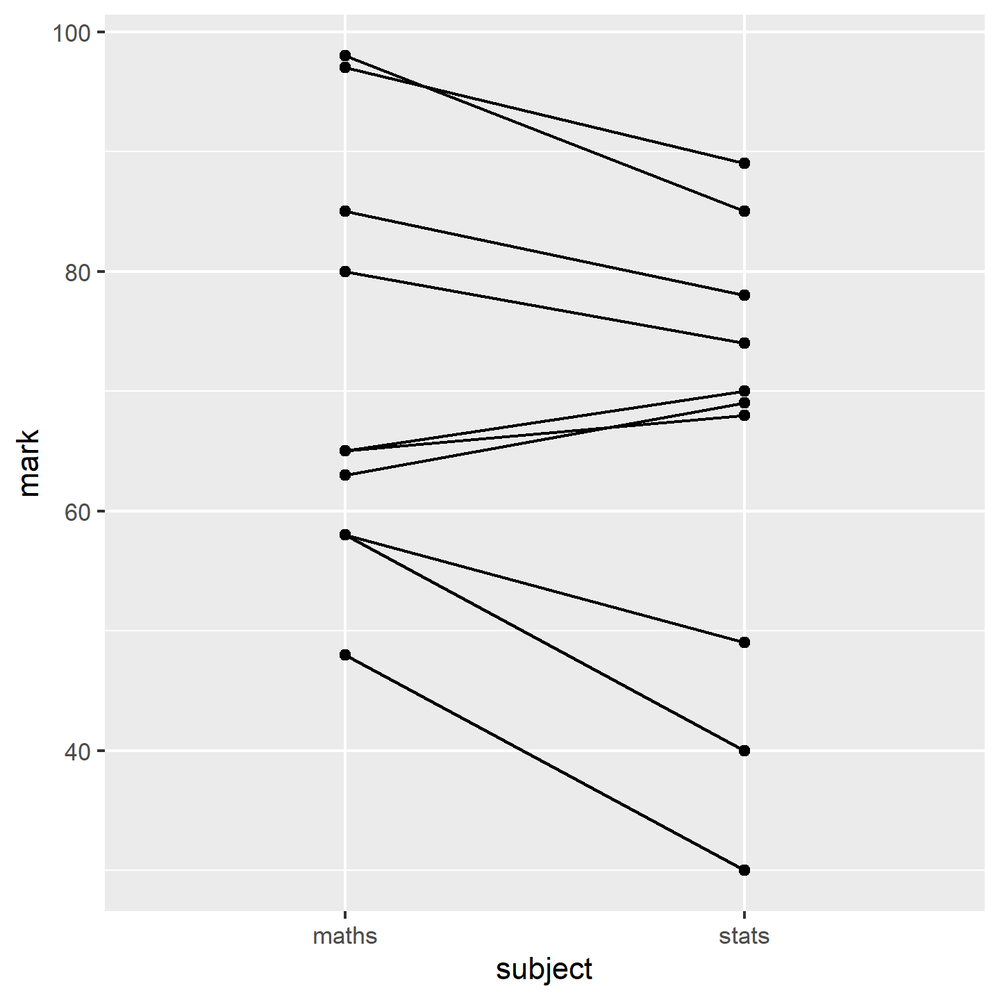
13.5 Two paired-samples, parametric
The data in marks.csv give the marks for ten students in two subjects: Data Analysis and Biology. These data are paired because we have two marks from one student so that a mark in one group has a closer relationship with one of the marks in the other group than with any of the other values. We want to know if students do equally well in both subjects. In this scenario our null hypothesis, \(H_0\), is that there is no difference between the Data Analysis and Biology marks for a student.
13.5.1 Import and explore
Import the data:
marks <- read_csv("data-raw/marks.csv")Since these data are paired, it makes sense to highlight how the marks differ for each student. One way of doing that is to draw a line linking their marks in each subject. This is known as a spaghetti plot. We can use two geoms: geom_point() and geom_line(). To join a student’s marks, we need to set the group aesthetic to student.1
ggplot(data = marks, aes(x = subject, y = mark)) +
geom_point() +
geom_line(aes(group = student))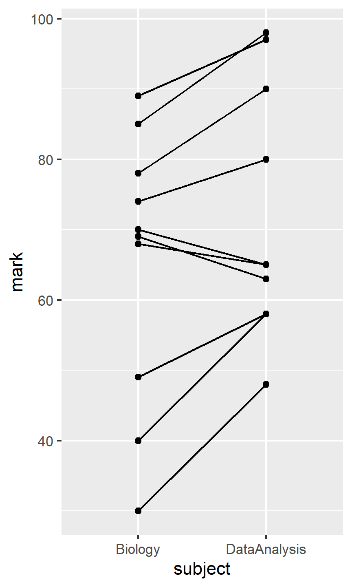
Summarise the data so that we can use the means in plots later:
marks_summary <- marks |>
group_by(subject) |>
summarise(mean = mean(mark))A paired test requires us to into account the variation between students.
13.5.2 Apply lm()
We can create a paired-sample model with the lm() function2 like this:
-
markis the dependent variable (response). -
subjectis the independent variable (explanatory factor). -
factor(student)accounts for the pairing by treating student as another explanatory variable. We have used factor because the values in students are the numbers 1 to 10 and we wantstudentto be treated as a category not a number
summary(mod)
##
## Call:
## lm(formula = mark ~ subject + factor(student), data = marks)
##
## Residuals:
## Min 1Q Median 3Q Max
## -6.5 -3.5 0.0 3.5 6.5
##
## Coefficients:
## Estimate Std. Error t value Pr(>|t|)
## (Intercept) 89.500 4.697 19.055 1.39e-08 ***
## subjectDataAnalysis 7.000 2.832 2.471 0.035486 *
## factor(student)2 -39.500 6.333 -6.237 0.000152 ***
## factor(student)3 -26.500 6.333 -4.184 0.002361 **
## factor(student)4 -25.500 6.333 -4.026 0.002990 **
## factor(student)5 -16.000 6.333 -2.526 0.032431 *
## factor(student)6 -54.000 6.333 -8.526 1.33e-05 ***
## factor(student)7 -9.000 6.333 -1.421 0.189010
## factor(student)8 -27.000 6.333 -4.263 0.002101 **
## factor(student)9 -44.000 6.333 -6.947 6.70e-05 ***
## factor(student)10 -1.500 6.333 -0.237 0.818082
## ---
## Signif. codes: 0 '***' 0.001 '**' 0.01 '*' 0.05 '.' 0.1 ' ' 1
##
## Residual standard error: 6.333 on 9 degrees of freedom
## Multiple R-squared: 0.9441, Adjusted R-squared: 0.8821
## F-statistic: 15.21 on 10 and 9 DF, p-value: 0.0001814The coefficient for (Intercept) gives the mean Biology mark and that for subjectDataAnalysis is amount that the Data Analysis mark are above Biology marks in general. The p-value tests whether this difference is significantly different from zero. The rest of the output considers how students differ. You can ignore this here.
If you find this a bit overwhelming to read you can use the anova() function on the model object to get a simpler output:
anova(mod)
## Analysis of Variance Table
##
## Response: mark
## Df Sum Sq Mean Sq F value Pr(>F)
## subject 1 245.0 245.00 6.108 0.035486 *
## factor(student) 9 5856.2 650.69 16.222 0.000153 ***
## Residuals 9 361.0 40.11
## ---
## Signif. codes: 0 '***' 0.001 '**' 0.01 '*' 0.05 '.' 0.1 ' ' 1You will notice that the p-value for subject is the same. The test statistic, \(F\) has a value of 6.11 and degrees of freedom of 1 and 9. This would be written as $F = $ 6.11 ; $d.f.= $ 1, 9; $p = $ 0.035 .
13.5.3 Check assumptions
We might expect marks to be normally distributed. However, this is a very small sample, and choosing a non-parametric test instead would be reasonable. However, we will continue with this example to demonstrate how to interpret and report on the result of a parametric paired-samples test (paired-samples t-test).
A plot the residuals against the fitted values (plot(mod, which = 1)) is not useful for a paired test. The normality of the residuals should be checked.
ggplot(mapping = aes(x = mod$residuals)) +
geom_histogram(bins = 3)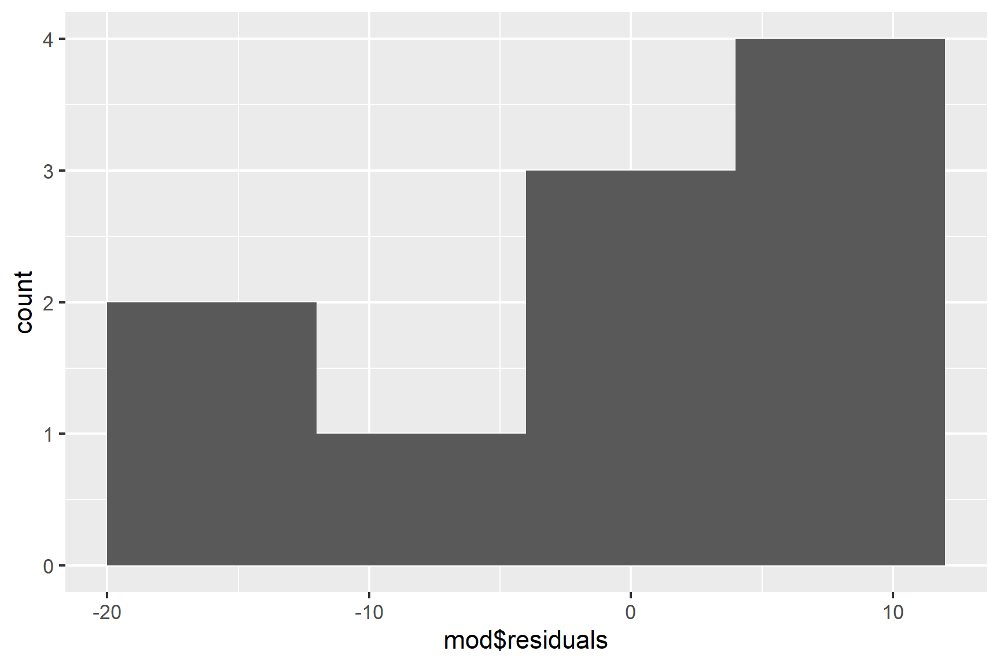
We only have 10 values, so the distribution is never going to look smooth. We can’t draw strong conclusions from this, but we do at least have a peak at 0. Similarly, a normality test is likely to be non-significant because of the small sample size, meaning the test is not very powerful. This means a non-significant result is not strong evidence of the residuals following a normal distribution:
shapiro.test(mod$residuals)
##
## Shapiro-Wilk normality test
##
## data: mod$residuals
## W = 0.92894, p-value = 0.147313.5.4 Report
Individual students score significantly higher in Data Analysis than in Biology (t = 2.47; d.f. = 9; p = 0.0355) with an average difference of 7%. See Figure 13.9
Code
ggplot(data = marks, aes(x = subject, y = mark)) +
geom_point(pch = 1, size = 3) +
geom_line(aes(group = student), linetype = 3) +
geom_point(data = marks_summary,
aes(x = subject, y = mean),
size = 3) +
scale_x_discrete(name = "") +
scale_y_continuous(name = "Mark",
expand = c(0, 0),
limits = c(0, 110)) +
annotate("segment", x = 1, xend = 2,
y = 105, yend = 105,
colour = "black") +
annotate("text", x = 1.5, y = 108,
label = expression(italic(p)~"= 0.0355")) +
theme_classic()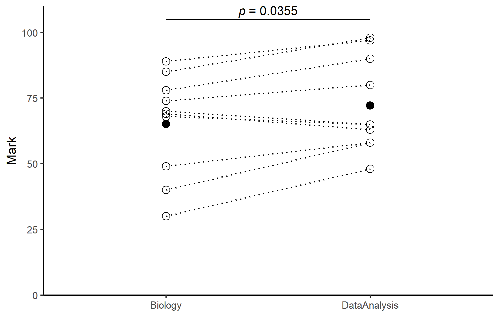
13.6 Two paired-samples, non-parametric
We have the marks for just 10 students. This sample is too small for us to judge whether the marks are normally distributed. We will use a non-parametric test instead. The “Wilcoxon signed-rank” test is the non-parametric equivalent of the paired-samples t-test. This is often referred to as the paired-sample Wilcoxon test, or just the Wilcoxon test.
The test is also applied in R with the wilcox.test() function but we add the paired = TRUE argument. We also have to give the two datasets rather than using the “formula method” of mark ~ subject. This means it is useful to pivot the data to “wide” format.
13.6.1 Pivot wider
Create a new dataframe marks_wide from marks:
marks_wide <- marks |>
pivot_wider(values_from = mark,
names_from = subject,
id_cols = student)-
values_from = mark: Uses themarkcolumn as values in the wide format. -
names_from = subject: Creates new columns based on unique values insubject -
id_cols = student: Keepsstudentas the identifier (i.e., each row represents a student).
13.6.2 Apply wilcox.test()
To apply a paired test with wilcox.test() we need to use the wide format data (untidy) and add the paired = TRUE argument:
wilcox.test(marks_wide$Biology, marks_wide$DataAnalysis, paired = TRUE)
##
## Wilcoxon signed rank test with continuity correction
##
## data: marks_wide$Biology and marks_wide$DataAnalysis
## V = 6.5, p-value = 0.03641
## alternative hypothesis: true location shift is not equal to 013.6.3 Report
Individual students score significantly higher in Data Analysis than in Biology (Wilcoxon signed rank test: V = 6.5; \(n\) = 10; p = 0.036).
13.7 Summary
A linear model with one explanatory variable with two groups and one continuous response is “a two-sample test”.
If pairs of observations in the groups have something in common that make them more similar to each other, than to other observations, then those observations are not independent. A paired-samples test is used when the observations are not independent.
A linear model with one explanatory variable with two groups and one continuous response is also known as a two-sample t-test when the samples are independent and as a paired-samples t-test when they are not
We can use
lm()to do two-sample and paired sample tests. We can also uset.test()for these but usinglm()helps us understand tests with more groups and/or more variables where we will have to uselm(). The output oflm()is also more typical of the output of statistical functions in R.We estimate the coefficients (also called the parameters) of the model. For a two-sample test these are the mean of the first group, \(\beta_0\) (which might also be called the intercept) and the difference between the means of the first and second groups, \(\beta_1\) (which might also be called the slope). For a paired-sample test there is just one parameter, the mean difference between pairs of values, \(\beta_0\) (which might also be called the intercept). We test whether the parameters differ significantly from zero
We can use
lm()to a linear regression.In the output of
lm()the coefficients are listed in a table in the Estimates column. The p-value for each coefficient is in the test of whether it differs from zero. At the bottom of the output there is a test of the model overall. In this case, this is exactly the same as the test of the \(\beta_1\) and the p-values are identical. The R-squared value is the proportion of the variance in the response variable that is explained by the model.The assumptions of the general linear model are that the residuals are normally distributed and have homogeneity of variance. A residual is the difference between the predicted value and the observed value.
We examine a histogram of the residuals and use the Shapiro-Wilk normality test to check the normality assumption. We check the variance of the residuals is the same for all fitted values with a residuals vs fitted plot.
If the assumptions are not met, we can use alternatives known as non-parametric tests. These are applied with
wilcox.test()in R.When reporting the results of a test we give the significance, direction and size of the effect. Our figures and the values we give should reflect the type of test we have used. We use means and standard errors for parametric tests and medians and interquartile ranges for non-parametric tests. We also give the test statistic, the degrees of freedom (parametric) or sample size (non-parametric) and the p-value. We annotate our figures with the p-value, making clear which comparison it applies to.
You might like to try removing
aes(group = student)to see what ggplot does when the lines are not grouped by student.↩︎This is not the only way to apply a paired test. When there are only two groups and no other explanatory variables, we can use
t.test(data = marks, mark ~ subject, paired = TRUE). A more general method that works when you have two or more non-independent values (e.g., more than two subjects) or additional explanatory variables is to create a “linear mixed model” withlmer().↩︎